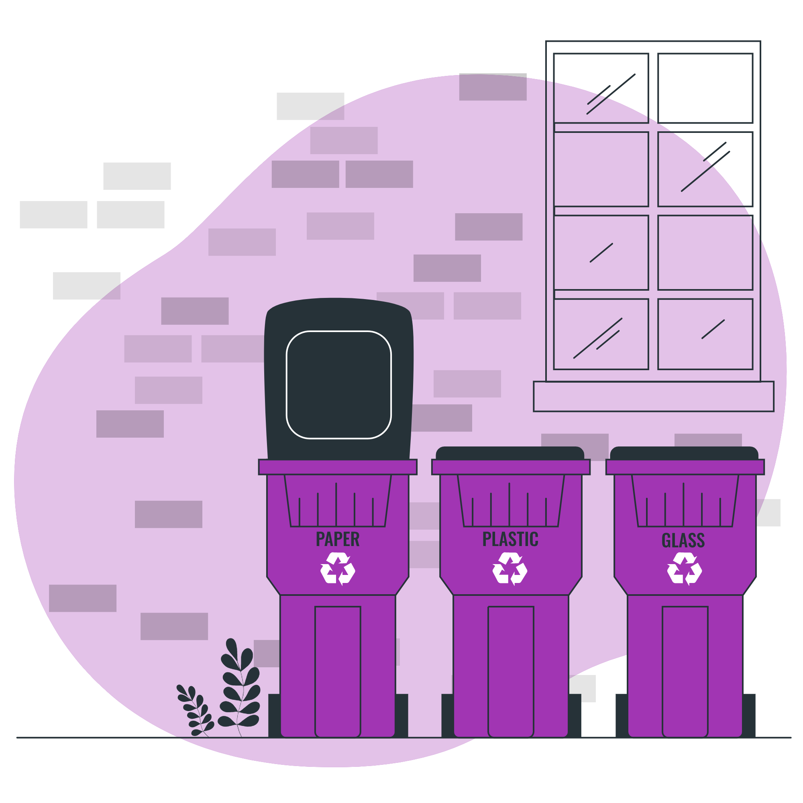

Bem vindo à Fantasy Sweet, uma doce fantasia!
Preparamos brigadeiros e beijinhos artesanais e deliciosos, para que cada cliente tenha a experiência fantástica que os doces podem nos proporcionar.
Nosso site foi criado com o intuito de conscientizar nossos clientes sobre como descartar corretamente as embalagens de nossos produtos, nos conhecer melhor, descobrindo um pouco da nossa história, dos nossos produtos e serviços.
Boa degustação!
O descarte correto é muito importante, mas por quê?
O descarte correto possui diversos benefícios e isso é de conhecimento geral. Mas quais são esses benefícios? A importância do descarte, coleta e gestão do lixo corretamente está diretamente ligada à redução dos impactos ambientais do consumo. Quando separamos o lixo, facilitamos muito o seu tratamento e diminuímos as chances de impactos nocivos para o ambiente e para a saúde da vida no planeta, incluindo a vida humana.
